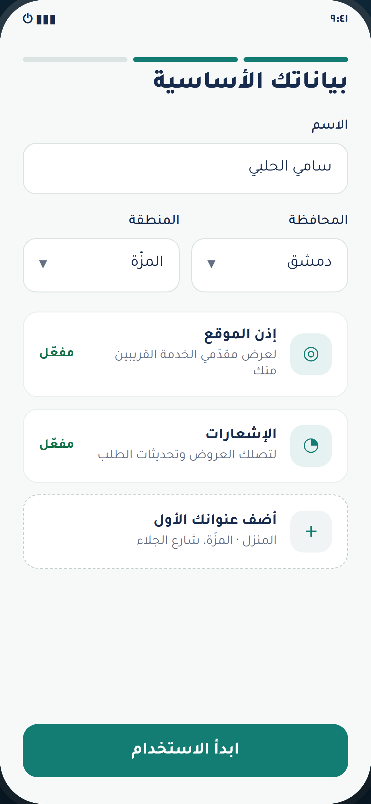
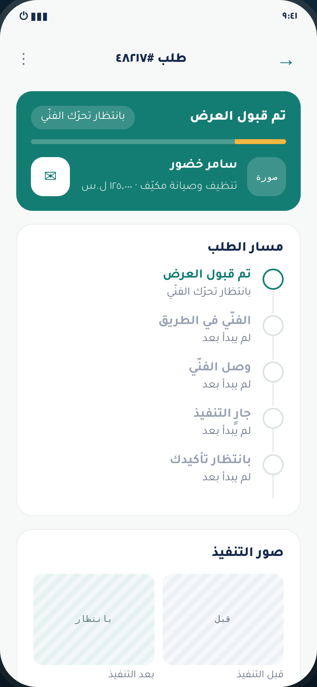
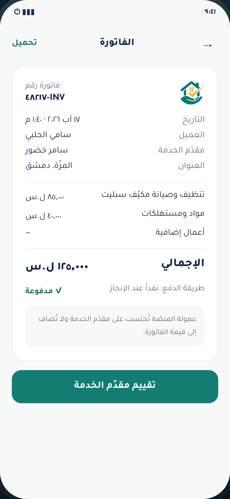

التوصيف الهندسي الكامل للمنصّة: معمارية النظام، وحزمة التقنيات المعتمدة، ونموذج البيانات، ومحرّك توزيع الطلبات، ودورة حياة الطلب، والطبقة المالية والعمولات، والتكاملات الخارجية، ومعايير الأمان والأداء والتوسّع — ونطاق المرحلة الأولى بدقّة.
سرّي تجاريًاالمطلوب ليس دليلاً لأسماء الحرفيين ولا منصّة إعلانات مبوّبة، بل منصّة تشغيل وإدارة خدمات متكاملة — تبدأ من حاجة العميل وتنتهي بالتقرير المالي. هذا الفهم هو ما شكّل كل قرار هندسي في هذا المستند.
قرأنا وثيقة التوصيف بأقسامها الاثنين والثلاثين كاملةً، وبنينا عليها نموذجاً تفاعلياً لمسار العميل اعتُمد بصرياً قبل كتابة هذا العرض. خلاصة قراءتنا أن نجاح عَوْنَك يتوقّف على أربعة محاور هندسية، لا على عدد الشاشات:
| المكوّن | الوصف | المرحلة |
|---|---|---|
| تطبيق الهاتف | تطبيق واحد على Android و iOS، يتيح التبديل بين وضع العميل ووضع مقدّم الخدمة دون حسابين منفصلين. | المرحلة ١ |
| لوحة تحكّم الإدارة | تطبيق ويب لإدارة العملاء ومقدّمي الخدمات والطلبات والعروض والدفعات والعمولات والشكاوى والتقييمات والإشعارات والمحتوى والتقارير ومناطق التغطية والتصنيفات والموظفين وصلاحياتهم. | المرحلة ١ |
| الصفحة التعريفية | صفحة هبوط تتضمّن التعريف بالتطبيق وأنواع الخدمات وطريقة الطلب والتسجيل كمقدّم خدمة وروابط التحميل والشروط والخصوصية والأسئلة الشائعة ونموذج التواصل. | المرحلة ١ |
| النظام الخلفي | الخادم الخلفي، قاعدة البيانات، واجهات API، إدارة الوسائط، المواقع الجغرافية، الإشعارات، الدفع، الصلاحيات، السجلات والتقارير. | المرحلة ١ |
غير مشمولة في نطاق المرحلة الأولى، ومسعّرة بنداً بنداً في المستند المالي. رُوعيت معمارياً بحيث لا تتطلّب إعادة بناء عند تفعيلها:
معمارية طبقية بوحدات نمطية داخل نواة واحدة قابلة للتفكيك، لا خدمات مصغّرة موزّعة. القرار مقصود ومشروح في ٣-٢.
كل تكامل خارجي يُنفَّذ خلف واجهة داخلية موحّدة. تغيير مزوّد الرسائل أو إضافة بوّابة دفع ثانية يتطلّب كتابة مُهايئ جديد فقط، لا تعديل منطق الأعمال — وهو ما يخدم مطلب «قابلية إضافة بوّابات دفع جديدة» مباشرةً، ويحمي المشروع من الارتهان لمزوّد بعينه.
| المعيار | القرار والمبرّر |
|---|---|
| سلامة المعاملات المالية | حجز المبلغ وخصم العمولة وتحرير المستحقّ يجب أن تتمّ في معاملة ذرّية واحدة. توزيعها على خدمات مصغّرة يفرض معاملات موزّعة معقّدة وخطرة في نظام مالي. |
| حجم الفريق ومدّة التنفيذ | الخدمات المصغّرة تفرض عبء بنية تحتية يستهلك من ميزانية المرحلة الأولى دون قيمة مضافة قبل بلوغ حجم مستخدمين كبير. |
| قابلية الفصل لاحقاً | الوحدات مفصولة بحدود وواجهات داخلية واضحة، فيمكن استخراج أي وحدة — المحادثات أو الإشعارات مثلاً — كخدمة مستقلّة عند الحاجة دون إعادة كتابة. |
| التوسّع الأفقي | النواة عديمة الحالة، فتُشغَّل نسخ متعدّدة خلف موازن حمل، والعمّال غير المتزامنين يتوسّعون بمعزل عن واجهات API. |
| العنصر | التقنية | المبرّر |
|---|---|---|
| إطار العمل | Flutter 3.x · Dart | الوثيقة طلبت تطبيقاً واحداً يعمل على Android و iOS. قاعدة شيفرة واحدة بأداء أصلي، ودعم RTL ناضج ومدمج، وتحكّم كامل بالخطوط وأحجامها — وهو مطلب صريح لمراعاة كبار السن. |
| إدارة الحالة | Riverpod + Freezed | حالة الطلب تمرّ بخمس عشرة مرحلة وتتغيّر لحظياً؛ يلزم نموذج حالة صارم يمنع الحالات غير الصالحة على مستوى نوع البيانات. |
| التخزين المحلّي | Drift (SQLite) + Secure Storage | مطلب «عدم توقّف بقية الوظائف عند ضعف الاتصال»: تُخزَّن الطلبات والمحادثات محلّياً وتُزامَن عند عودة الشبكة. الرموز الحسّاسة في مخزن مشفّر. |
| الشبكة | Dio + Interceptors | إعادة محاولة تلقائية، وتجديد رموز الدخول، وطابور رفع للوسائط. |
| الخرائط | Google Maps SDK | تحديد الموقع، اختيار العنوان يدوياً، حساب المسافة، عرض نطاق التغطية. |
| اللحظي | Socket.IO client | المحادثة وتحديث حالة الطلب ووصول العروض لحظياً دون استطلاع دوري يستنزف البطارية. |
| الوسائط | image_picker · video_compress | مطلب «ضغط الصور والفيديوهات قبل رفعها» — الضغط على الجهاز قبل الإرسال. |
| العنصر | التقنية | المبرّر |
|---|---|---|
| إطار العمل | NestJS · Node.js 22 (TypeScript) | بنية وحدات وحقن تبعيات تترجم حدود المجال إلى شيفرة مباشرةً، وأداء ممتاز في الأحمال كثيفة الإدخال/الإخراج. TypeScript يعطي أماناً في الأنواع بين الخادم واللوحة. |
| واجهات API | REST + OpenAPI 3.1 | توثيق تلقائي وتوليد عملاء — والتوثيق الفنّي أحد المخرجات المطلوبة صراحةً. |
| اللحظي | Socket.IO + Redis Adapter | يعمل عبر نسخ متعدّدة من الخادم. |
| الطوابير | BullMQ على Redis | الإشعارات ومعالجة الوسائط وبناء التقارير خارج دورة الطلب. |
| المصادقة | JWT + Refresh Rotation | مدّة جلسة محدّدة، وإبطال الجلسات، وإدارة الأجهزة النشطة — مطالب أمنية صريحة. |
| الصلاحيات | RBAC + CASL | صلاحيات دقيقة لكل موظف، وتقييد الوصول إلى التقارير المالية. |
| التحقّق | Zod / class-validator | تحقّق صارم من كل مُدخَل على حدود API. |
| العنصر | التقنية | المبرّر |
|---|---|---|
| قاعدة البيانات | PostgreSQL 16 | معاملات ACID كاملة — شرط للنظام المالي — ودعم JSONB للحقول الديناميكية، وبحث نصّي كامل مدمج. |
| الاستعلام الجغرافي | PostGIS | مطلب «الإرسال بحسب نصف قطر التغطية» و«احتساب المسافة»: فهارس مكانية تُنجز استعلام «مَن يغطّي هذه النقطة» في أجزاء من الثانية. |
| الذاكرة المؤقّتة | Redis 7 | الجلسات، وحالة توفّر مقدّمي الخدمة، وتحديد المعدّل، والطوابير، ونشر الأحداث. |
| تخزين الوسائط | S3-compatible + CDN | صور الأعمال والوثائق والفيديو، بروابط موقّعة محدودة الصلاحية للوثائق الحسّاسة. |
| ترحيل المخطّط | Prisma Migrate | ترحيلات مُصدَرة ومُراجَعة، وبيئة اختبار مطابقة للإنتاج. |
| العنصر | التقنية | المبرّر |
|---|---|---|
| لوحة الإدارة | React 18 + TypeScript + Vite | لوحة داخلية لا تحتاج فهرسة محرّكات بحث؛ تطبيق أحادي الصفحة أسرع في الجداول الكبيرة والتصفية. |
| مكتبة الواجهة | MUI (RTL) + TanStack Table | دعم RTL أصلي، وجداول ضخمة بترقيم من الخادم وتصفية متقدّمة. |
| الرسوم البيانية | Recharts | لوحة المؤشّرات والنمو والتوزيع الجغرافي. |
| الصفحة التعريفية | Next.js (SSR/SSG) | مطلب SEO وسرعة التحميل: تصيير على الخادم مع وسوم Meta عربية سليمة. |
| العنصر | التقنية | الغرض |
|---|---|---|
| الحاويات | Docker + Compose | بيئات متطابقة بين التطوير والاختبار والإنتاج. |
| التكامل المستمرّ | GitHub Actions | بناء واختبار ونشر آلي مع بوّابات جودة. |
| الوكيل العكسي | Nginx + TLS | إنهاء TLS، وضغط، ورؤوس أمان. |
| تتبّع الأخطاء | Sentry | مطلب «مراقبة الأعطال وتسجيل الأخطاء». |
| السجلّات والمقاييس | Prometheus + Grafana + Loki | مراقبة الأداء والتنبيه. |
| النسخ الاحتياطي | لقطات مُدارة + أرشفة سجلّ | نسخ يومية مع اختبار استعادة دوري. |
| التحليلات | Firebase Analytics | سلوك المستخدم داخل التطبيق. |
نموذج مُطبَّع يفصل الهوية عن الملف المهني عن القيد المالي. هذا الفصل هو ما يسمح بحساب واحد بوَضعين، وبتدقيق مالي سليم، وبإضافة خدمات جديدة دون تعديل برمجي.
| المجموعة | الجداول الرئيسية | ملاحظات التصميم |
|---|---|---|
| الهويات والوصول | users user_devices sessions
otp_challenges roles permissions
admin_users audit_log |
المستخدم واحد. الأدوار مفصولة لتسمح بأدوار متعدّدة. سجلّ التدقيق يقيّد كل إجراء إداري حسّاس. |
| الملف المهني | provider_profiles provider_documents
provider_services provider_coverage
provider_schedule portfolio_items |
ملف مهني اختياري يُضاف للمستخدم. التغطية مخزّنة كهندسة PostGIS، والجدول الزمني كفترات أسبوعية قابلة للاستعلام. |
| الكتالوج | categories services service_fields
pricing_models service_requirements |
محور المرونة: service_fields يعرّف حقول كل خدمة
كبيانات لا كشيفرة، فتُضاف مهنة جديدة من اللوحة. |
| المواقع | governorates cities districts
user_addresses coverage_zones |
تسلسل هرمي كامل: محافظة ← مدينة ← منطقة ← حي، مع رسوم انتقال لكل منطقة. |
| الطلبات | orders order_items order_media
order_status_history order_extras dispatch_log |
كل انتقال حالة يُسجَّل بالتوقيت والفاعل — أساس تقارير الطلبات المتعثّرة وأوقات الاستجابة. |
| العروض | quotes quote_lines quote_revisions |
العرض يتضمّن أجور اليد العاملة والمواد ومدّة التنفيذ ووقت الوصول ومدّة الصلاحية. |
| المالية | ledger_entries wallets payments
refunds commission_rules payouts
invoices |
دفتر قيود مزدوج غير قابل للتعديل. أي تصحيح يُقيَّد كقيد عكسي لا بتعديل السجل. |
| التواصل | conversations messages message_flags
notifications notification_templates |
المحادثة مرتبطة بالطلب وتُحفظ كسجلّ في النزاعات. |
| الجودة | reviews review_criteria complaints
complaint_messages disputes |
تقييم ثنائي الاتجاه مقيّد بطلب مكتمل فعلي، وواحد لكل طرف لكل طلب. |
| المحتوى | banners pages faqs settings |
محتوى قابل للتحرير من اللوحة دون نشر إصدار جديد. |
المطلب الأصعب في الوثيقة هو أن تضيف الإدارة خدمات جديدة دون تعديل برمجي. الحلّ أن يكون نموذج طلب كل خدمة معرَّفاً كبيانات:
نصّت الوثيقة على عشرة معايير لتوزيع الطلب. نُنفّذها كمحرّك تسجيل نقاط أوزانه قابلة للضبط من لوحة الإدارة، لا مثبّتة في الشيفرة.
| المعيار | الوزن المبدئي | طريقة الاحتساب |
|---|---|---|
| القرب الجغرافي | 20% | تناقص خطّي بالمسافة ضمن نصف قطر التغطية المعلن. |
| التقييم العام | 20% | متوسّط مرجّح يعطي وزناً أكبر للتقييمات الحديثة. |
| سرعة الاستجابة | 15% | وسيط الزمن بين وصول الطلب وتقديم العرض في آخر ثلاثين يوماً. |
| عدد الطلبات المكتملة | 12% | تدرّج لوغاريتمي يمنع احتكار الحسابات القديمة. |
| مستوى التوثيق | 12% | مسجَّل ‹ موثَّق ‹ شركة موثّقة. |
| نسبة قبول الطلبات | 8% | المقبول ÷ المُرسَل، بحدّ أدنى من العيّنة. |
| الالتزام بالمواعيد | 7% | نسبة الوصول ضمن وقت الوصول المعلن. |
| التوفّر في الموعد المطلوب | 6% | تطابق الجدول المعلن مع موعد الخدمة المطلوب. |
| سنوات الخبرة | 6% | عامل مساعد بسقف محدّد. |
| نسبة الإلغاء | −6% | عامل خصم على الإلغاء من طرف مقدّم الخدمة. |
الأوزان مبدئية وتُعتمد نهائياً مع الجهة المالكة في مرحلة التحليل، وتبقى قابلة للتعديل من لوحة الإدارة في أي وقت دون إصدار برمجي جديد.
الحالات الخمس عشرة تُنفَّذ كآلة حالات صريحة: لكل انتقال شرط وفاعل مصرَّح له، ويُسجَّل في
order_status_history. الانتقالات غير المسموحة مرفوضة على مستوى النظام لا
على مستوى الواجهة.
| # | المرحلة | ما ينفّذه النظام |
|---|---|---|
| ١ | إنشاء الطلب | اختيار التصنيف والخدمة، وعنوان مختصر، وشرح المشكلة، وإرفاق صور وفيديو، وتحديد العنوان والموقع على الخريطة، وموعد الخدمة (الآن / اليوم / موعد لاحق)، ودرجة الاستعجال، وميزانية تقريبية اختيارية، وطريقة الدفع المفضّلة. |
| ٢ | فحص الطلب | تحقّق آلي من اكتمال البيانات وصلاحية الموقع ونوع الخدمة والمحتوى المخالف والكلمات المحظورة وتكرار الطلب وأهلية الحساب. النشر تلقائي؛ المشبوه فقط يُحال يدوياً. |
| ٣ | التوزيع | محرّك المطابقة (القسم ٦) يوجّه الطلب على شرائح متدرّجة. |
| ٤ | العروض | السعر المقترح، وأجور اليد العاملة، وتكلفة المواد، ومدّة التنفيذ، ووقت الوصول المتوقّع، ومدّة صلاحية العرض، وشروطه، وملاحظات، ومرفقات. |
| ٥ | الاختيار | يقارن العميل العروض: الاسم، والصورة، والتوثيق، والتقييم، وعدد الخدمات، والخبرة، والسعر، ووقت الوصول، ومدّة التنفيذ. بعد الاختيار يُغلق باب العروض، ويُشعَر المختار، ويُبلَّغ الباقون بانتهاء المنافسة. |
| ٦ | التنفيذ | تدرّج الحالات، وإضافة أعمال أو مواد إضافية بموافقة مسبقة من العميل، وتحديث الحالة لحظياً على الطرفين. |
| ٧ | تأكيد الإنجاز | يضغط مقدّم الخدمة «تم إنجاز الخدمة» ويرفع صور ما بعد التنفيذ، فيُشعَر العميل ويؤكّد، فتُخصم العمولة ويُحرَّر المستحقّ، ويُطلب التقييم من الطرفين. وعند عدم استجابة العميل خلال مهلة تحدّدها الإدارة يُغلق الطلب تلقائياً بعد مراجعة الحالة. |
نصّت الوثيقة على أن الخدمات لا تُسعَّر بالطريقة نفسها. كل نموذج مُنفَّذ كاستراتيجية مستقلّة تُربط بالخدمة من لوحة الإدارة:
| النموذج | الاستخدام | السلوك في النظام |
|---|---|---|
| سعر ثابت | نفخ إطار، تبديل إطار، تنظيف مكيّف، تركيب مصباح، غسيل سيارة، زيارة كشف. | يظهر السعر الأساسي قبل الطلب، ويُتخطّى طور العروض ويُسنَد الطلب مباشرةً. |
| عرض سعر | دهان منزل، نقل أثاث، إصلاح تسرّب، صيانة جهاز، أعمال النجارة والحدادة. | الدورة الكاملة: تفاصيل وصور ← عروض متنافسة ← اختيار. |
| معاينة | الأعمال التي لا تُقدَّر عن بُعد. | سعر زيارة كشف يُدفع أولاً — ويُخصم من قيمة العمل — ثم يُقدَّم السعر النهائي بعد المعاينة ويوافق عليه العميل داخل الطلب نفسه. |
| بالساعة | عمالة بالساعة وأعمال غير محدّدة المدّة. | الإجمالي = الساعات × عدد العمال × تكلفة الساعة، مع تسجيل وقت البدء والانتهاء. |
| طارئ وفوري | الأعطال العاجلة. | إرسال إلى المتاحين حالياً ضمن نطاق ضيّق، مع رسوم استعجال يحدّدها النظام أو مقدّم الخدمة وفق سياسة المنصّة. |
| طلب مباشر | الطلب من صفحة مقدّم خدمة بعينه، أو إعادة طلب سابق. | يتخطّى التوزيع ويذهب إلى المحدَّد، مع إمكانية تعديل الموعد أو العنوان أو التفاصيل. |
| الطريقة | المرحلة | ملاحظات |
|---|---|---|
| الدفع النقدي بعد تنفيذ الخدمة | المرحلة ١ | تُقيَّد العمولة كدَين على مقدّم الخدمة يُسوَّى من مستحقّاته اللاحقة. |
| الدفع الإلكتروني عبر بوّابة واحدة | المرحلة ١ | البوّابة تُحدَّد مع الجهة المالكة؛ التكامل مسعّر منفصلاً. |
| المحفظة الإلكترونية والرصيد | المرحلة ٢ | البنية الدفترية جاهزة من المرحلة الأولى؛ يُضاف سطح الاستخدام لاحقاً. |
| حجز المبلغ | المرحلة ٢ | مفصّل في ٨-٢؛ يتطلّب بوّابة تدعم الحجز والتحرير. |
| الدفع الجزئي أو الكامل المسبق | المرحلة ٢ | مبنيّ على المحفظة والحجز. |
نصّت الوثيقة صراحةً: لا يجب تثبيت نسبة العمولة برمجياً، بل تُدار من لوحة التحكم. نُنفّذ ذلك كجدول قواعد ذات أولويات، ويُطبَّق أخصّ قاعدة مطابقة:
| بُعد القاعدة | أنواع القيمة | مثال |
|---|---|---|
| نوع الخدمة | نسبة مئوية مبلغ ثابت نسبة بحدّ أدنى نسبة بحدّ أعلى نسبة بحدّين |
12% على خدمات التنظيف |
| المحافظة | 10% في محافظة قيد الإطلاق | |
| مقدّم الخدمة | 8% لحساب مميّز متعاقد | |
| الشركة | نسبة تفاوضية للشركات | |
| خطّة الاشتراك | عمولة أقل للخطط المدفوعة | |
| العرض الترويجي | 0% لأول ثلاثة طلبات | |
| طريقة الدفع | فرق يعوّض رسوم البوّابة |
لا يبدأ أي عمل إضافي إلا بموافقة صريحة من العميل. ينتقل الطلب إلى حالة «بانتظار موافقة العميل على أعمال إضافية» ويتوقّف احتساب أي زيادة حتى الموافقة. يضيف مقدّم الخدمة بنداً بسببه وقيمته، فيصل إشعار للعميل، وعند الموافقة تُضاف القيمة إلى إجمالي الطلب وتُعاد العمولة احتساباً على الإجمالي الجديد.
سياسة الإلغاء مصفوفة قابلة للإدارة: لكل حالة إلغاء ولكل نوع خدمة تُحدَّد النتيجة المالية من اللوحة.
| حالة الإلغاء | النتائج الممكنة القابلة للضبط |
|---|---|
| قبل قبول أي عرض | رسوم إلغاء · تعويض زيارة · خصم جزئي · استرداد كامل · استرداد جزئي — تحدّد الإدارة القاعدة لكل تقاطع بين الحالة ونوع الخدمة. |
| بعد قبول العرض | |
| قبل تحرّك مقدّم الخدمة | |
| بعد تحرّك مقدّم الخدمة | |
| بعد الوصول | |
| أثناء التنفيذ | |
| عدم حضور العميل | |
| عدم حضور مقدّم الخدمة |
محرّك قائم على القوالب والأحداث: كل حدث يُطلق قالباً، والقالب يحدّد القنوات والمحتوى. القوالب تُحرَّر من اللوحة دون إصدار برمجي.
| القناة | المرحلة | الاستخدام |
|---|---|---|
| إشعارات داخل التطبيق | المرحلة ١ | مركز إشعارات مع حالة القراءة. |
| إشعارات فورية Push | المرحلة ١ | القناة الأساسية للأحداث اللحظية عبر FCM. |
| رسائل SMS | المرحلة ١ | رمز الدخول OTP والأحداث الحرجة فقط. |
| البريد الإلكتروني | المرحلة ١ | الفواتير والتقارير والتنبيهات الإدارية. |
| WhatsApp Business | اختياري | يُسعَّر منفصلاً حسب توفّر خدمة الربط. |
نصّت الوثيقة على دعم البحث بالعربية مع معالجة الاختلافات البسيطة في كتابة الكلمات. هذه ليست خاصية جانبية — هي الفرق بين أن يجد المستخدم الخدمة أو يغادر التطبيق.
| المعالجة | مثال | الأثر |
|---|---|---|
| توحيد الهمزات | أ / إ / آ ← ا | «إصلاح» و«اصلاح» تعطيان النتيجة نفسها. |
| توحيد التاء المربوطة | ة ← ه | «سباكة» و«سباكه». |
| توحيد الألف المقصورة | ى ← ي | «مبنى» و«مبني». |
| حذف التشكيل والتطويل | الحركات والكشيدة | تجاهلها في المطابقة. |
| توحيد الأرقام | ٠١٢٣ ← 0123 | البحث بالأرقام العربية والهندية معاً. |
| التسامح مع الأخطاء | Trigram similarity | «كهربائي» تطابق «كهربجي» عبر تشابه الثلاثيات. |
| المرادفات | «مكيّف» ≡ «إسبليت» | قاموس مرادفات قابل للتحرير من اللوحة. |
التنفيذ عبر unaccent وpg_trgm في PostgreSQL مع عمود مُطبَّع مفهرس،
دون الحاجة إلى محرّك بحث خارجي في المرحلة الأولى.
| الوظيفة | المرحلة | التنفيذ |
|---|---|---|
| تحديد موقع العميل تلقائياً بعد موافقته | المرحلة ١ | أذونات صريحة مع شرح سبب الطلب. |
| تحديد الموقع يدوياً على الخريطة | المرحلة ١ | مؤشّر قابل للسحب مع عنوان عكسي. |
| حفظ عناوين متعدّدة | المرحلة ١ | المنزل، العمل، منزل الوالدين، منزل أحد أفراد العائلة، موقع السيارة. |
| احتساب المسافة بين الطرفين | المرحلة ١ | PostGIS للتصفية، وواجهة الخرائط لزمن الوصول الفعلي. |
| الإرسال بحسب نصف قطر التغطية | المرحلة ١ | هندسة تغطية لكل مقدّم خدمة بفهرس مكاني. |
| إظهار وقت الوصول التقريبي | المرحلة ١ | من واجهة المسارات مع تخزين مؤقّت لخفض الاستهلاك. |
| تحديد مناطق عمل التطبيق من اللوحة | المرحلة ١ | تفعيل وإيقاف أي منطقة أو خدمة داخل منطقة. |
| تتبّع حركة مقدّم الخدمة بعد التوجّه | المرحلة ٢ | بثّ موقع دوري مع ضوابط خصوصية وإيقاف تلقائي عند الوصول. |
نظام التصميم أُقرّ ضمن النموذج التفاعلي المعتمد لمسار العميل، وهو المرجع البصري المُلزِم لمرحلة التطوير. ما يلي رموزه الأساسية.
| العنصر | القيمة | ملاحظة |
|---|---|---|
| خط الواجهة | Tajawal | خط عربي هندسي واضح، يدعم أوزاناً من Light إلى Black. |
| الخط اللاتيني المرافق | Inter | للأرقام اللاتينية والمصطلحات التقنية. |
| حجم النصّ الأساسي | ١٦ نقطة كحدّ أدنى | مطلب مراعاة كبار السن. |
| أهداف اللمس | ٤٨ نقطة كحدّ أدنى | يقلّل الضغط الخاطئ. |
| التباين | WCAG AA | مُتحقَّق منه على كل تركيبات النصّ والخلفية. |
| مقاس الشاشة المرجعي | ٣٩٠ × ٨٤٤ | مع تخطيط مرن من ٤٫٧ بوصة حتى الأجهزة اللوحية. |
| الأرقام | عربية-هندية ٠١٢٣ | مع دعم البحث والإدخال بالنمطين. |
خمس عشرة شاشة تغطّي مسار العميل كاملاً، من الدخول حتى التقييم. الشاشات أدناه من النموذج التفاعلي المعتمد، وهي المرجع البصري المُلزِم للتطوير.



مستويات التوثيق الأربعة كما نصّت الوثيقة، وتظهر علامة التوثيق بجوار الحسابات الموثّقة:
| القسم | المحتوى |
|---|---|
| الرئيسية | حالة الحساب · حالة التوثيق · التقييم · الطلبات الجديدة والحالية والمكتملة · الإيرادات · الرصيد المتاح · العمولة · سرعة الاستجابة · نسبة القبول · نسبة الإلغاء · إشعارات مهمّة |
| الطلبات | المتاحة · التي قُدِّم عليها عرض · المقبولة · الحالية · المكتملة · الملغاة · المتعثّرة |
| العروض | إنشاء · تعديل · سحب · حالة العرض · تاريخ انتهاء الصلاحية |
| الخدمات | إضافة · تعديل · إيقاف · طريقة التسعير · السعر الابتدائي · مناطق التغطية |
| معرض الأعمال | إضافة صور وفيديو ووصف · ربط العمل بنوع خدمة · حذف أو تعديل |
| المحفظة | الرصيد المتاح · الرصيد المحجوز · الأرباح · العمولات · طلبات السحب · سجلّ العمليات · الفواتير |
| التقييمات | المتوسّط · التفاصيل · الردّ على التقييم · الإبلاغ عن تقييم مخالف |
| الإعدادات | البيانات الشخصية · أوقات العمل · مناطق التغطية · حالة التوفّر · الإشعارات · اللغة · الخصوصية · تغيير رقم الهاتف |
| الوحدة | أبرز القدرات |
|---|---|
| المؤشّرات الرئيسية | إجمالي العملاء ومقدّمي الخدمات والموثّقين · الطلبات الجديدة والمكتملة والملغاة والمتعثّرة · إجمالي قيمة الطلبات · إجمالي العمولات · المستحقّات · الشكاوى المفتوحة · متوسّط التقييم · أكثر الخدمات طلباً · أكثر المناطق نشاطاً · نمو المستخدمين والطلبات |
| المستخدمون | بحث · البيانات وسجلّ الطلبات والتقييمات والشكاوى · تفعيل · إيقاف مؤقّت · حظر · إرسال إشعار · تعديل وفق الصلاحية · الأجهزة والجلسات النشطة |
| مقدّمو الخدمات | طلبات الانضمام · مراجعة الوثائق · قبول أو رفض · طلب وثائق إضافية · حالة التوثيق · الاختصاصات · مراجعة الأعمال · إيقاف اختصاص · مراقبة الأداء · الاشتراكات · نسب العمولة · الأرصدة |
| الطلبات | عرض الكل · بحث وتصفية · التفاصيل والعروض والأطراف · تغيير الحالة عند الضرورة · إسناد يدوي · إلغاء · إعادة فتح · سجلّ التغييرات · متابعة المتأخّرة |
| الخدمات والتصنيفات | تصنيف رئيسي وفرعي · إضافة خدمة · أيقونة وصورة · نموذج التسعير · الحقول المطلوبة · الوثائق المطلوبة · العمولة · الحدّ الأدنى للسعر · إتاحة الطوارئ · إيقاف وتفعيل · ترتيب الظهور |
| المناطق | محافظات · مدن · مناطق · أحياء · مناطق التغطية · رسوم الانتقال · الخدمات المتاحة بكل منطقة |
| المدفوعات | الناجحة والفاشلة · المحجوزة · الاسترداد · المستحقّات · طلبات السحب · العمولات · التسويات · الفواتير · التقارير المالية |
| الشكاوى | الاستقبال · الأولوية · تعيين موظف · مراسلة الأطراف · المرفقات · تعليق الدفعة · تسجيل القرار · الإغلاق · تقرير الشكاوى |
| المحتوى | السلايدر · البنرات · الصفحات التعريفية · الأسئلة الشائعة · الشروط · الخصوصية · النصائح · الإعلانات · رسائل التطبيق · بيانات التواصل · روابط التواصل الاجتماعي |
| الإشعارات | إرسال لمستخدم أو مجموعة · حسب المنطقة أو نوع الحساب أو الخدمة · الجدولة · قوالب الرسائل |
| الموظفون | إضافة موظف · إنشاء دور · تحديد الصلاحيات · تقييد التقارير المالية · تقييد كل إجراء · إيقاف أو حذف الصلاحيات |
الأدوار قوالب جاهزة، وصلاحيات كل موظف تبقى قابلة للتحديد بصورة منفصلة من داخل اللوحة. وكل إجراء إداري يُقيَّد في سجلّ تدقيق غير قابل للتعديل يتضمّن الفاعل والزمن والقيمة قبل التغيير وبعده.
أربعة وعشرون تقريراً، كلها قابلة للعرض والتصفية والتصدير إلى Excel و PDF. تُبنى التقارير الثقيلة في مهام غير متزامنة ثم يُخطَر المستخدم بجهوزيتها، حتى لا تُبطئ اللوحة.
تقريرا «أكواد الخصم» و«الاشتراكات» يعتمدان على وظائف المرحلة الثانية؛ يُسلَّمان في المرحلة الأولى كهيكل جاهز يمتلئ بالبيانات فور تفعيل تلك الوظائف.
| التكامل | الغرض | المرحلة | الرسوم |
|---|---|---|---|
| خدمة رموز OTP | التحقّق من رقم الهاتف | المرحلة ١ | لكل رسالة — على الجهة المالكة |
| خدمة الرسائل النصّية | الإشعارات الحرجة | المرحلة ١ | لكل رسالة — على الجهة المالكة |
| الخرائط وتحديد المواقع | الموقع والمسافة وزمن الوصول | المرحلة ١ | حسب الاستهلاك |
| بوّابة الدفع الإلكتروني | الدفع الإلكتروني | المرحلة ١ | لكل عملية |
| إشعارات Firebase | الإشعارات الفورية | المرحلة ١ | مجانية ضمن الحدود القياسية |
| خدمة البريد الإلكتروني | الفواتير والتنبيهات | المرحلة ١ | اشتراك شهري |
| التخزين السحابي للوسائط | الصور والفيديو والوثائق | المرحلة ١ | حسب السعة والنقل |
| أدوات تحليل الاستخدام | سلوك المستخدمين | المرحلة ١ | مجانية ضمن الحدود القياسية |
| أدوات مراقبة الأعطال | تتبّع الأخطاء | المرحلة ١ | خطّة مجانية كافية للإطلاق |
| متجرا Google Play و App Store | نشر التطبيقات | المرحلة ١ | رسوم حسابات المطوّر |
| WhatsApp Business | قناة إشعارات إضافية | اختياري | يُسعَّر عند الطلب |
| المتطلّب في الوثيقة | التنفيذ |
|---|---|
| تشفير الاتصال باستخدام SSL | TLS 1.3 إلزامي على كل النطاقات مع HSTS، وتثبيت الشهادة في التطبيق للمسارات الحسّاسة. |
| تشفير كلمات المرور والبيانات الحسّاسة | تجزئة Argon2id لأي كلمة مرور، وتشفير على مستوى العمود للحقول الحسّاسة، وتشفير القرص للنسخ الاحتياطية. |
| استخدام رموز دخول آمنة | JWT قصير العمر مع Refresh Token دوّار وكشف إعادة الاستخدام؛ الرموز في مخزن الجهاز المشفّر. |
| تحديد مدّة جلسة المستخدم | مدّة قابلة للضبط من اللوحة، وإنهاء الجلسات عن بُعد، وعرض الأجهزة النشطة للمستخدم. |
| منع المحاولات المتكرّرة لتسجيل الدخول | تحديد معدّل تصاعدي على الرقم وعنوان الشبكة والجهاز، مع تجميد مؤقّت وتنبيه إداري. |
| تسجيل العمليات الحسّاسة | سجلّ تدقيق غير قابل للتعديل لكل إجراء إداري ومالي، بالفاعل والزمن والقيمة قبل وبعد. |
| عدم إظهار الوثائق لموظفين غير مخوّلين | الوثائق في تخزين خاصّ بروابط موقّعة قصيرة الصلاحية، محكومة بالصلاحية، وكل وصول مُقيَّد. |
| أخذ نسخ احتياطية دورية | نسخ يومية كاملة وأرشفة سجلّ مستمرّة، مع اختبار استعادة دوري موثّق. |
| حماية واجهات API | مصادقة إلزامية، وتحقّق صارم من المُدخلات، وتحديد معدّل لكل مسار، ومنع الإفراط في جلب البيانات. |
| حماية النظام من الطلبات المزيّفة | تحقّق سلامة الجهاز، ومفاتيح توقيع للطلبات الحسّاسة، وكشف الأنماط الآلية. |
| تطبيق صلاحيات دقيقة للموظفين | RBAC على مستوى الإجراء والحقل، مع منع تصعيد الصلاحيات وفصل الواجبات في المسار المالي. |
| حذف أو إخفاء البيانات وفق سياسة الخصوصية | حذف عند الطلب مع تجهيل القيود المالية بدل حذفها، حفاظاً على سلامة الدفاتر. |
إضافةً إلى ما سبق: فحص أمني آلي للاعتماديات في كل بناء، ومراجعة يدوية للمسارات الحرجة — المصادقة والدفع والصلاحيات ورفع الملفات — قبل الإطلاق، ومعالجة نتائجها ضمن نطاق التسليم.
| المتطلّب | التنفيذ والهدف القياسي |
|---|---|
| واجهات سريعة الاستجابة | هدف زمن استجابة API عند المئين التسعين أقلّ من ٤٠٠ مللي ثانية للمسارات الشائعة، وفهارس مُصمَّمة لكل استعلام في المسار الحرج. |
| ضغط الصور والفيديوهات قبل الرفع | ضغط على الجهاز قبل الإرسال، وتوليد مصغّرات وصيغ متعدّدة الدقّة على الخادم، والتوزيع عبر CDN. |
| التحميل التدريجي للبيانات | ترقيم بالمؤشّر في كل القوائم، وتحميل كسول للصور. |
| عدم التوقّف عند ضعف الاتصال | ذاكرة محلّية للقراءة، وطابور عمليات للكتابة يُعاد إرساله عند عودة الشبكة، ورسائل حالة واضحة. |
| استيعاب زيادة المستخدمين والطلبات | خوادم عديمة الحالة خلف موازن حمل، وتوسّع أفقي للعمّال، ونسخ قراءة لقاعدة البيانات عند الحاجة. |
| النوع | النطاق | الأداة والمعيار |
|---|---|---|
| اختبارات الوحدة | منطق الأعمال الحرج | تغطية لا تقلّ عن ٧٠٪ للوحدات المالية وآلة الحالات. |
| اختبارات التكامل | واجهات API وقاعدة البيانات | على قاعدة اختبار معزولة تُبنى وتُهدَم مع كل تشغيل. |
| اختبارات الواجهة الطرفية | مسارات المستخدم الكاملة | دورة الطلب كاملة من الإنشاء إلى التقييم. |
| اختبارات الأداء | الأحمال المتوقّعة | سيناريوهات ذروة على التوزيع والعروض والمحادثة. |
| اختبارات الأمان | المسارات الحرجة | فحص آلي للاعتماديات مع مراجعة يدوية للمصادقة والدفع والصلاحيات ورفع الملفات. |
| اختبار القبول | معايير الاستلام كاملة | تنفيذ سيناريوهات القسم ٧ من المستند المالي بحضور الجهة المالكة وتوقيع محضر. |
| اختبار الأجهزة | Android و iOS | مصفوفة أجهزة حقيقية تغطّي الشائع في السوق المستهدف. |
| البيئة | الغرض | المواصفات |
|---|---|---|
| التطوير | عمل الفريق اليومي | حاويات محلّية مطابقة للإنتاج ببيانات وهمية. |
| الاختبار | اختبار القبول والمراجعة | نسخة مطابقة للإنتاج ببيانات مجهّلة — مطلب صريح في الوثيقة. |
| الإنتاج | التشغيل الفعلي | خوادم بموازن حمل، وقاعدة بيانات مُدارة بنسخ احتياطي آلي، وتخزين كائنات مع CDN. |
خطّ نشر آلي: دفع الشيفرة ← بناء ← اختبارات ← فحص أمني ← نشر على بيئة الاختبار ← موافقة ← نشر على الإنتاج مع إمكانية التراجع الفوري. وتُنشَأ حسابات الاستضافة والنطاق والخدمات الخارجية باسم الجهة المالكة.
| التوسّع المطلوب | الاستعداد المعماري في المرحلة الأولى |
|---|---|
| محافظات ومناطق جديدة | هرم المواقع بيانات لا شيفرة — تُضاف من اللوحة فوراً. |
| دول جديدة | العملة ورمز الدولة ومنطقة التوقيت حقول في نموذج البيانات منذ البداية. |
| لغات جديدة | كل النصوص في ملفّات ترجمة وبنية التدويل مفعّلة — يبقى العمل ترجمةً فقط. |
| خدمات جديدة | مخطّط الحقول الديناميكي، بلا تعديل برمجي — وهو جوهر التصميم. |
| بوّابات دفع جديدة | واجهة دفع موحّدة — تُضاف بوّابة بكتابة مُهايئ فقط. |
| شركات توصيل | نموذج المهمّة قابل لاستقبال نوع «توصيل» ضمن الكتالوج نفسه. |
| نظام اشتراكات | جداول الخطط والاشتراكات ضمن المخطّط، وربط العمولة بالخطّة جاهز. |
| نظام تأمين على الخدمات | نقاط ربط في دورة الطلب لإضافة بند تأمين وقيده مالياً. |
| برنامج ولاء | الدفتر المالي يستوعب نقاطاً ورصيداً ترويجياً كأنواع قيود. |
| مركز اتصال | واجهات API تسمح لأنظمة خارجية بالاطّلاع والتصرّف ضمن الصلاحيات. |
| موقع إلكتروني كامل للعملاء | واجهات API مستقلّة عن العميل — يمكن بناء واجهة ويب فوقها مباشرةً. |